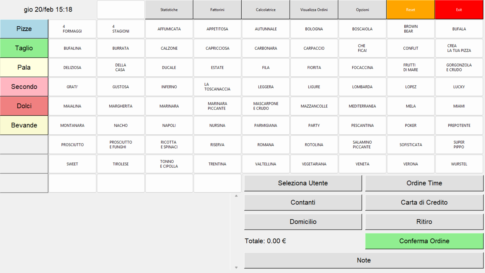

Gestionale Pizzeria


Il gestionale per pizzerie è una soluzione software realizzata in Python che semplifica le operazioni quotidiane. Grazie all'integrazione con un database MariaDB, permette di gestire ordini, monitorare l'inventario e pianificare i percorsi dei fattorini, garantendo un servizio rapido ed efficiente.